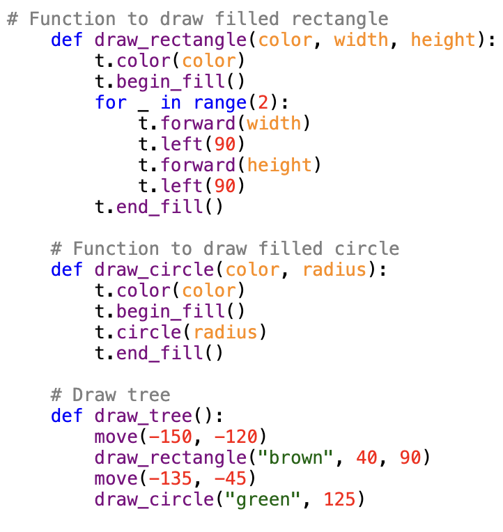
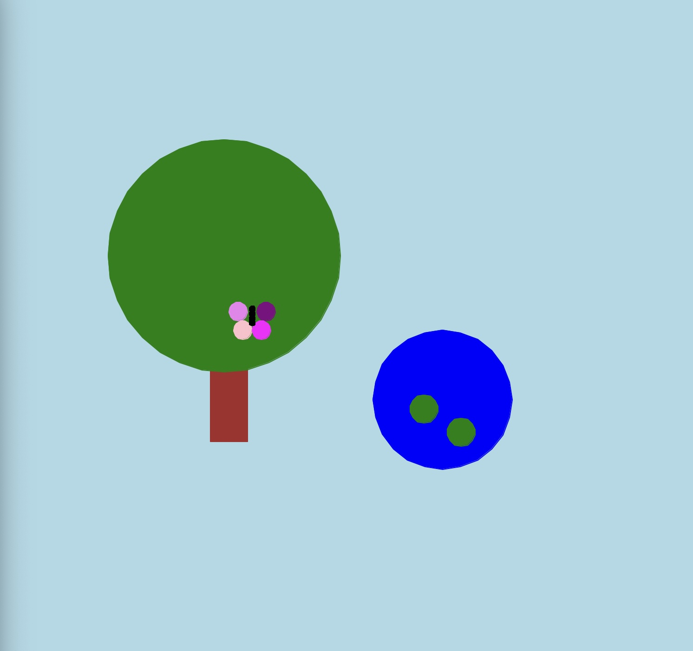

In this assignment, you will create a graphical scene using Python’s Turtle graphics module. You will implement one of 15 unique scene variations by utilizing the provided starter code functions and adding your implementation of the draw_scene(t) function. This project will help you develop skills in programming logic, function calls, and basic graphical rendering.
This function creates a tree by using a rectangle and one overlapping circle. The parameter allows for the color, width, and height. I have refactored several steps from the original code to make the code nice and tidy. The second function instructs the pen to draw a filled circle with color. Rectangle: - t: The function is to draw a filled rectangle - x, y: width and height Circle: - t: color - radius: circle 
Here's the completed turtle graphics scene featuring a house with a tree, pond and colorful butterflies in the variation.
